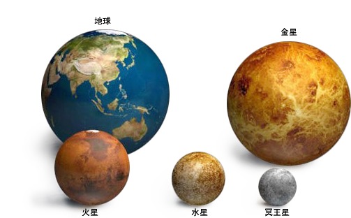
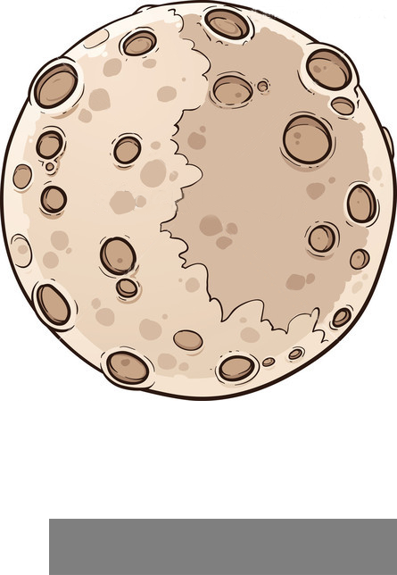

太阳系的中心天体
--别 称: 白驹 金虎 赤乌 阳乌 金乌 金轮 火轮
太阳系中的八大行星、小行星、流星、彗星、外海王星天体以及星际尘埃等，都围绕着太阳公转，而太阳则围绕着银河系的中心公转。
太阳质量约为地球质量的33万倍
太阳直径约为地球直径的109倍


水星
是太阳系八大行星最内侧也是最小的一颗行星，也是离太阳最近的行星。
离太阳距离最近
水星和太阳的平均距离为5790万公里，约为日地距离的0.387倍（0.387天文单位），比其它太阳系的行星近，到目前为止还没有发现过比水星更近太阳的行星。
轨道速度最快
因为距离最近，所以受到太阳的引力也最大，因此在它的轨道上比任何行星都跑得快，轨道速度为每秒48公里，比地球的轨道速度快18公里。这样快的速度，只用15分钟就能环绕地球一周。
表面温差最大
因为没有大气的调节，距离太阳又非常近，所以在太阳的烘烤下，向阳面的温度最高时可达430℃，但背阳面的夜间温度可降到零下160℃，昼夜温差近600℃，夺得行星表面温差最大的冠军，这真是一个处于火和冰之间的世界。
卫星最少
太阳系中发现了越来越多的卫星，总数超过60个，但水星和金星是根本没有卫星的行星。
时间最快
